第4章 二叉树
4.1 二叉树概述
4.1.1 二叉树的基本概念
二叉树由1个根结点和这个根结点的左子树和右子树组成。左子树是1颗二叉树，右子树也是1颗二叉树。左子树和右子树有可能为空。在二叉树中，每个结点最多有两颗子树。如图4.1.1所示是1颗二叉树。
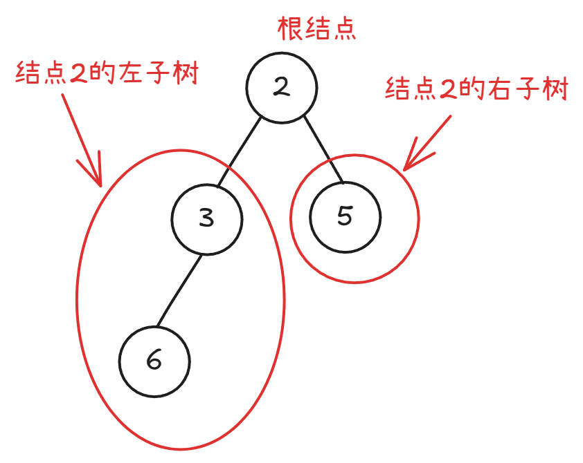
图4.1.1
如图4.1.1所示，其中结点2是这颗二叉树的根结点。图中的二叉树有4个结点分别是结点2，结点3，结点5，结点6。没有左右孩子的结点是叶子结点，结点5和结点6是叶子结点。结点2的左孩子是结点3，结点2的右孩子是结点5，结点3的左孩子是结点6，结点3没有右孩子。结点3和结点5的父亲结点是结点2，结点6的父亲结点是结点3，结点3的兄弟结点是结点5，结点5的兄弟结点是结点3，结点6没有兄弟结点。二叉树的高度是指二叉树中的总层数。图中二叉树总共是3层，因此图中二叉树的高度是3。
如图4.1.2所示，结点a是父亲结点，结点a的左孩子是结点b，结点a的右孩子是结点c。结点b和结点c有1个共同的父亲结点a，因此结点b和结点c是兄弟，结点b的兄弟结点是结点c，结点c的兄弟
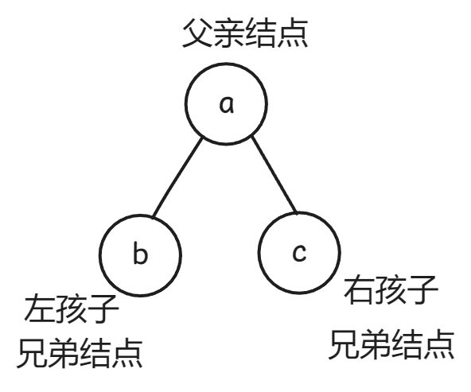
图4.1.2
如图4.1.3所示是二叉树的4种不同形态。
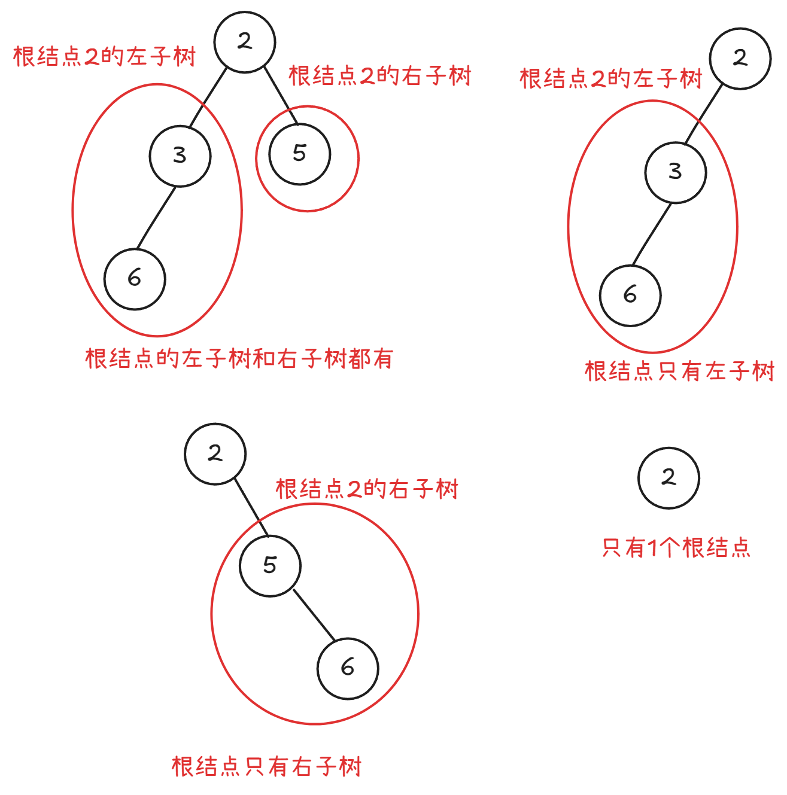
图4.1.3
4.1.2 通过链表实现二叉树
二叉树通常使用链表来实现。使用链表实现的二叉树叫二叉链表。二叉链表每个结点由3个部分组成，其中左边的部分存储该结点左孩子的地址，右边的部分存储该结点右孩子的地址，中间的部分存储数据。如图4.1.4所示是通过链表实现二叉树的原理。二叉树中的结点由3个部分组成，当1个结点有左孩子则left指针保存的是左孩子的地址，该结点的left指针指向该结点的左孩子，当1个结点有右孩子则right指针保存的是右孩子的地址，该结点的right指针指向该结点的右孩子。data存储数据，left为NULL说明该结点没有左孩子，right为NULL说明该结点没有右孩子。
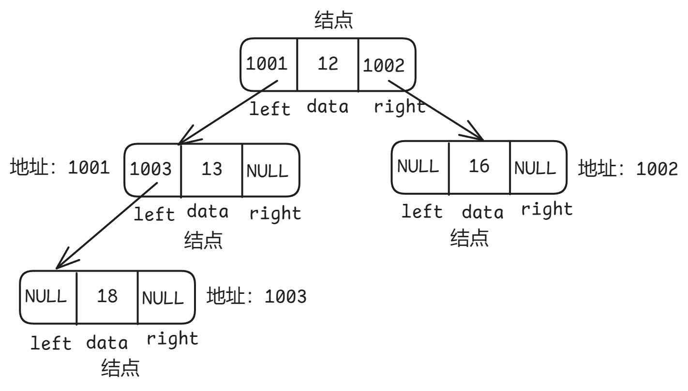
图4.1.4
如图4.1.4所示，结点12中指针left保存了结点13的地址，因此结点12的指针left指向结点13，结点12中指针right保存了结点16的地址，因此结点12的指针right指向结点16，结点13中指针left保存了结点18的地址，因此结点13的指针left指向结点18，结点13没有右孩子，因此结点13的指针right为NULL ，结点16没有左右孩子，因此结点16的指针left和指针right都为NULL 。结点18没有左右孩子，因此结点18的指针left和指针right都为NULL 。
通过链表实现二叉树的结构体定义如下：
//定义二叉树结点typedef struct BTNode{ //数据域 int data; //左指针 struct BTNode* left; //右指针 struct BTNode* right;}BTNode;4.2 二叉树的先序遍历
4.2.1 二叉树的先序遍历递归实现
什么是二叉树的先序遍历？先访问根结点，然后遍历当前根结点的左子树，再遍历当前根结点的右子树。即根左右，因为根结点是最先访问的所以叫先序遍历。对于二叉树中每一个要遍历的子树都采用根左右的顺序进行遍历。先序遍历中的每一个结点都可以看作根结点，根结点就是当前访问到的结点。
图4.2.1是一个二叉树，先序遍历结果：3 4 5 6 9，按照根左右的顺序进行遍历。遍历顺序如下：
根：先遍历根结点3。 左：然后遍历根结点3的左子树，遍历根结点4，遍历根结点4的左子树，因为根结点4的左子树只有1个结点5只需要遍历结点5，遍历根结点4的右子树，因为根结点4的右子树只有1个结点6只需要遍历结点6。 右：最后遍历根结点3的右子树：因为结点3的右子树只有1个结点9只需要遍历结点9。
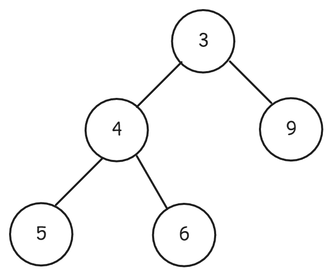
图4.2.1
二叉树的先序遍历递归实现代码如下：
xxxxxxxxxx//先序遍历递归实现void preOrder(BTNode* T){ //T为NULL说明树为空，递归结束 if(T==NULL){ return; }else{ //先序遍历中的每一个结点都可以看作根结点 //访问根结点 //根结点就是当前访问到的结点 printf("%d ",T->data); //先序遍历当前根结点的左子树 preOrder(T->left); //先序遍历当前根结点的右子树 preOrder(T->right); }}先序遍历递归代码实现的原理如图4.2.2所示：
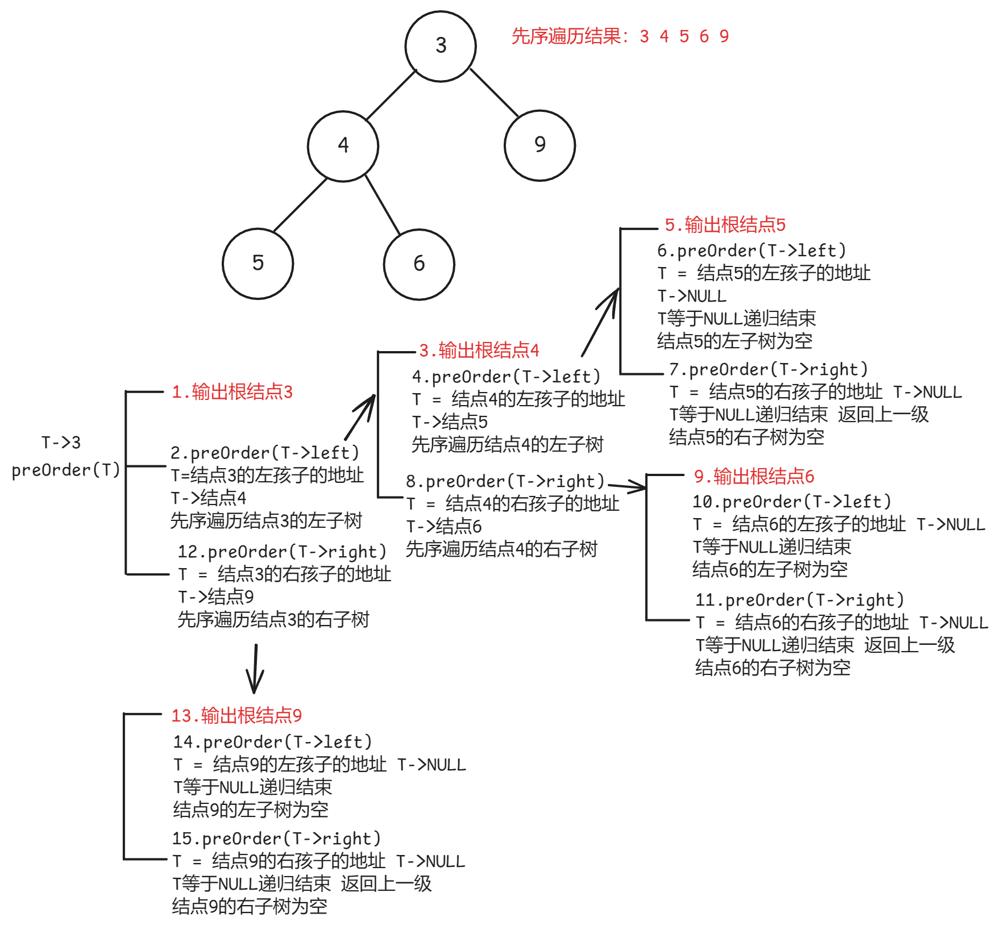
图4.2.2
4.2.2 二叉树的先序遍历非递归实现
先序遍历非递归实现需要定义1个顺序栈，先序遍历非递归实现的基本思路是：初始情况下栈为空，先将二叉树的根结点入栈，然后结点出栈，打印出栈的结点。如果出栈的结点的右孩子存在则将右孩子入栈，如果出栈的结点的左孩子存在则将左孩子入栈。必须先将右孩子先入栈左孩子后入栈，因为先序遍历的顺序是根左右。然后结点出栈，打印出栈的结点。如果出栈的结点的右孩子存在则将右孩子入栈，如果出栈的结点的左孩子存在则将左孩子入栈。重复上述步骤直到栈为空为止。栈为空说明二叉树遍历完了。
先序遍历非递归实现的过程如图4.2.3所示：
第1步：初始情况下栈为空，先将根结点3入栈 第2步：结点3出栈，将结点3的右孩子9入栈，将结点3的左孩子4入栈 第3步：结点4出栈，因为结点4是叶子结点没有左右孩子，不需要入栈 第4步：结点9出栈，将结点9的右孩子6入栈，将结点9的左孩子5入栈 第5步：结点5出栈，因为结点5是叶子结点没有左右孩子，不需要入栈 第6步：结点6出栈，因为结点6是叶子结点没有左右孩子，不需要入栈 此时栈为空说明整棵二叉树遍历完了，出栈结点组成的序列就是先序遍历序列。
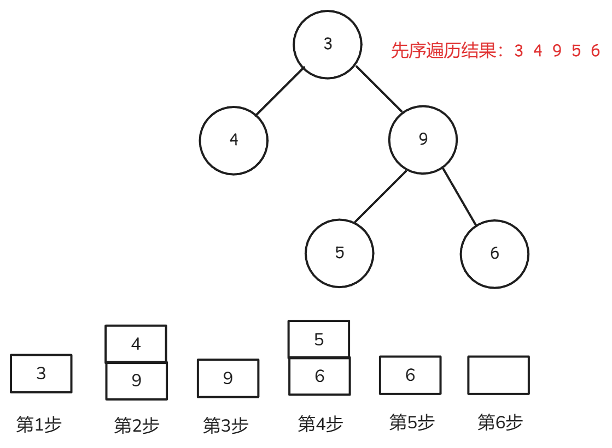
图4.2.3
二叉树的先序遍历非递归实现代码如下：
xxxxxxxxxx//先序遍历非递归实现void preOrder2(BTNode* T){ //如果T为NULL说明树为空，无需遍历 if(T!=NULL){ //定义1个顺序栈，栈中存放的是结点的地址 BTNode* p[MaxSize]; //栈初始化 int top =-1; //根结点入栈 top++; p[top] = T; //如果栈为空说明二叉树遍历完了 //top等于-1说明栈为空，top不等于-1说明栈不为空，栈不为空while循环继续（继续遍历） while(top!=-1){ //获取出栈结点 BTNode* q = p[top]; //打印出栈结点的值 printf("%d ",q->data); //栈顶结点出栈 top--; //如果出栈结点的右孩子存在则右孩子入栈 if(q->right!=NULL){ top++; //出栈结点的右孩子的地址入栈 p[top] = q->right; } //如果出栈结点的左孩子存在则左孩子入栈 if(q->left!=NULL){ top++; //出栈结点的左孩子的地址入栈 p[top] = q->left; } } }}4.3 通过先序遍历创建二叉树
根据先序遍历结果：3 4 5 6 9，可以创建出两个不同的二叉树。如图4.3.1所示。
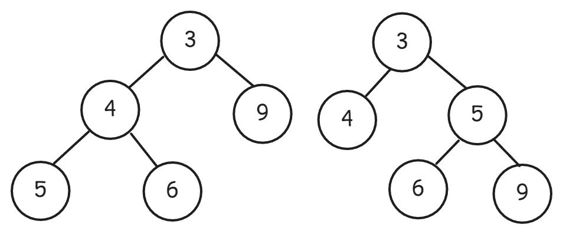
图4.3.1
如果把先序遍历结果修改为：3 4 5 0 0 6 0 0 9 0 0，只能创建1个二叉树，创建出来的二叉树是唯一的，0表示NULL结点，创建出来的二叉树如图4.3.2所示。之所以要使用0表示NULL结点是因为根据给定的遍历序列创建出来的二叉树可能有多个，添加上NULL结点之后创建出来的二叉树就是唯一的。
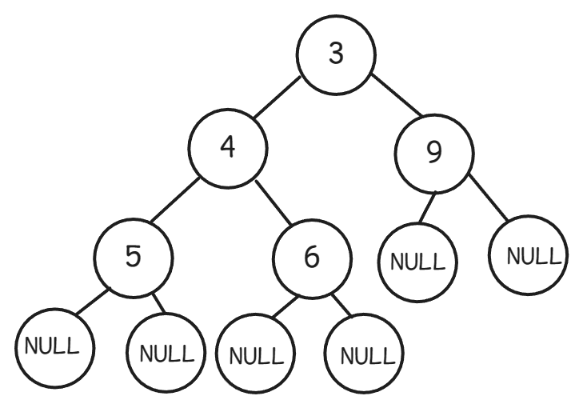
图4.3.2
给定一个先序遍历序列，根据这个给定的序列创建1个二叉树。通过先序遍历创建二叉树的基本思路是：通过键盘依次输入先序遍历的序列，每输入1个数字创建1个新结点，然后创建这个新结点的左子树，然后创建这个新结点的右子树。如果输入的是0则说明是NULL结点。
通过先序遍历创建二叉树的代码如下：
xxxxxxxxxx//先序遍历创建二叉树void createBT(BTNode* &T){ int n; cout << "请输入当前结点的值，0代表NULL结点："; //接收键盘输入的值，并将这个值赋给n cin >> n; //如果输入的是0表示NULL结点 if(n==0){ //将NULL结点的父亲结点的left指针或者right指针设置为NULL T=NULL; //递归结束 return; }else{ //创建新结点,T指向新创建的结点 T=(BTNode*)malloc(sizeof(BTNode)); //给新结点的数据域赋值 T->data =n; //给新结点的指针域赋值 T->left = NULL; T->right =NULL; //创建当前新结点的左子树 createBT(T->left); //创建当前新结点的右子树 createBT(T->right); } }通过先序遍历创建二叉树的代码执行原理如图4.3.3所示：
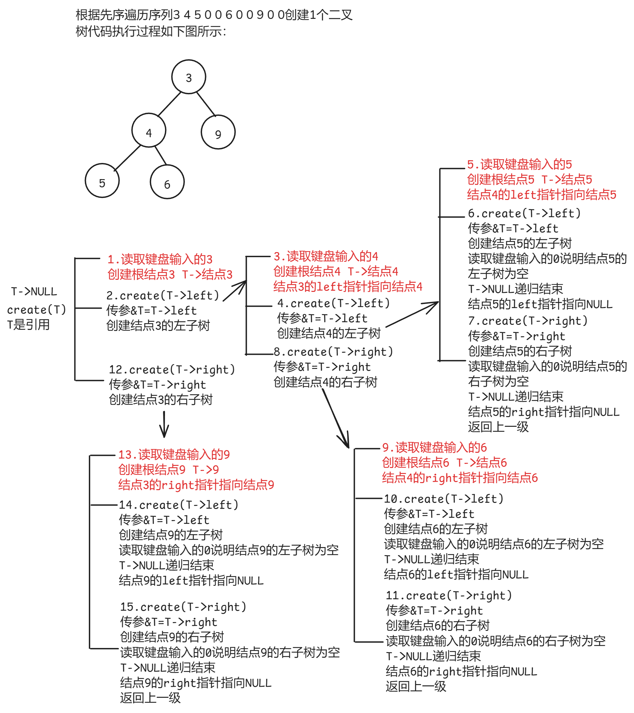
图4.3.3
4.4 二叉树的中序遍历
4.4.1 二叉树的中序遍历递归实现
什么是二叉树的中序遍历？先遍历当前根结点的左子树，然后访问根结点，再遍历当前根结点的右子树。即左根右，因为根结点是在中间访问的所以叫中序遍历。对于二叉树中每一个要遍历的子树都采用左根右的顺序进行遍历。中序遍历中的每一个结点都可以看作根结点，当前根结点就是当前访问到的结点。
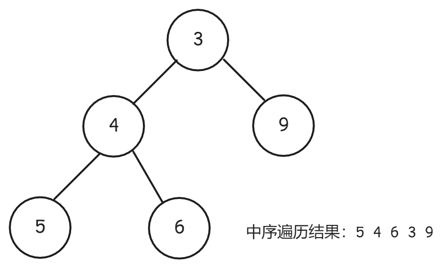
图4.4.1
遍历图4.4.1中的二叉树，使用中序遍历，遍历过程如下： 左：先遍历根结点3的左子树，遍历根结点4的左子树，因为根结点4的左子树只有1个结点5只需要遍历结点5，然后遍历根结点4，遍历根结点4的右子树，因为根结点4的右子树只有1个结点6只需要遍历结点6。 根：遍历根结点3。 右：最后遍历根结点3的右子树，因为结点3的右子树只有1个结点9只需要遍历结点9。
二叉树的中序遍历递归实现代码如下：
xxxxxxxxxx//中序遍历递归实现void inOrder(BTNode* T){ //T为NULL说明树为空，递归结束 if(T==NULL){ return; }else{ //中序遍历当前根结点的左子树 preOrder(T->left); //访问根结点 printf("%d ",T->data); //中序遍历当前根结点的右子树 preOrder(T->right); } }}中序遍历递归实现的代码执行过程如图4.4.2所示：在中序遍历递归实现中，每一个结点都可以看作根结点。这里的根结点就是当前访问到的结点。
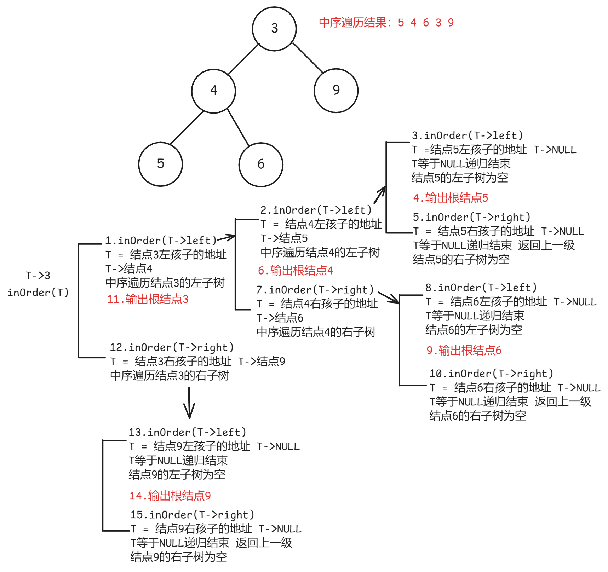
xxxxxxxxxx图4.4.2
4.4.2 二叉树的中序遍历非递归实现
二叉树的中序遍历非递归实现的基本思路为：定义1个顺序栈，初始情况下栈为空，先将二叉树的根结点入栈。总结：1.入左出右。入栈后要判断入栈结点的左孩子是否存在。出栈后要判断出栈结点的右孩子是否存在。2.存在就入栈，不存在就出栈。如果左孩子存在左孩子入栈，如果左孩子不存在就出栈并打印出栈结点。如果右孩子存在右孩子入栈。如果右孩子不存在就出栈并打印出栈结点。
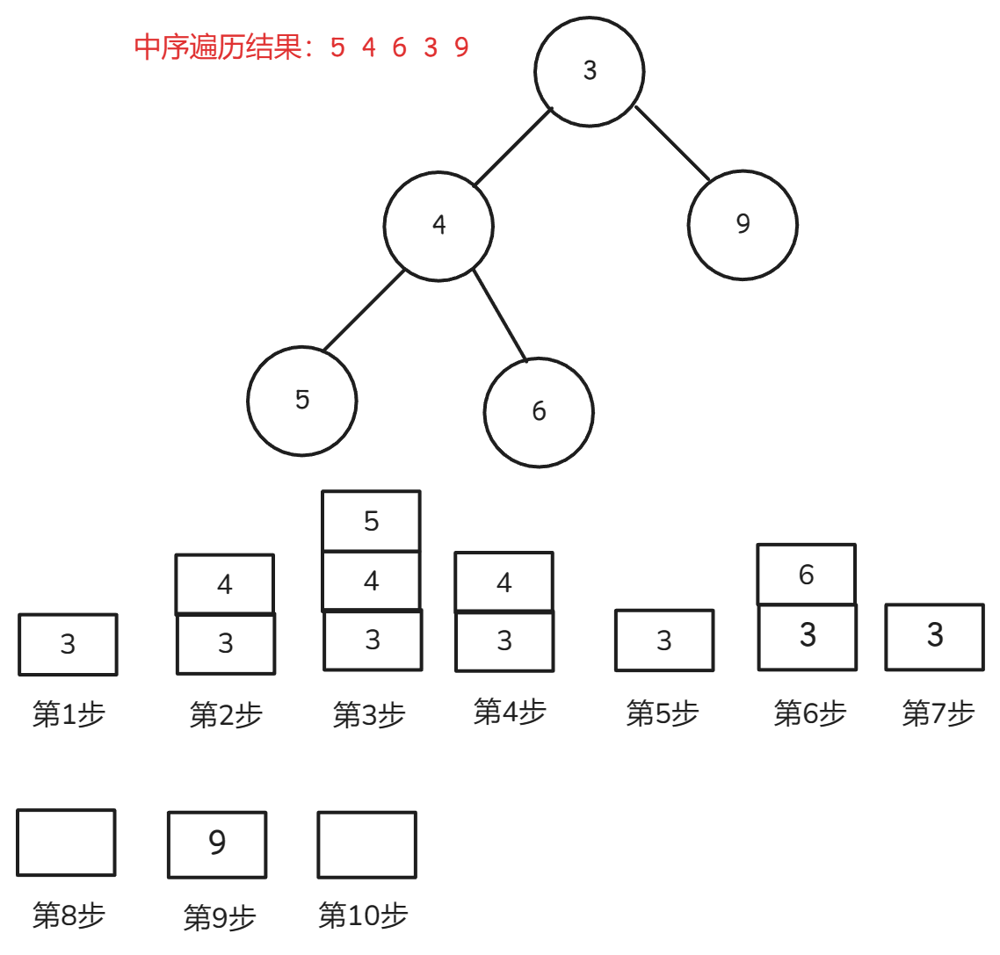
图4.4.3
使用中序遍历非递归算法遍历图4.4.3中的二叉树，遍历过程如下：
第1步：初始情况下栈为空，先将根结点3入栈。 第2步：入栈结点3的左孩子存在，左孩子4入栈。 第3步：入栈结点4的左孩子存在，左孩子5入栈。 第4步：入栈结点5的左孩子不存在，栈顶结点5出栈，打印出栈结点5。 第5步：出栈结点5的右孩子不存在，栈顶结点4出栈，打印出栈结点4。 第6步：出栈结点4的右孩子存在，右孩子6入栈。 第7步：入栈结点6的左孩子不存在，栈顶结点6出栈，打印出栈结点6。 第8步：出栈结点6的右孩子不存在，栈顶结点3出栈，打印出栈结点3，此时栈为空 ，但是二叉树还没有遍历完。 第9步：出栈结点3的右孩子存在，右孩子9入栈。 第10步：入栈结点9的左孩子不存在，栈顶结点9出栈，打印出栈结点9。 此时栈为空并且出栈结点9的右孩子不存在， 二叉树遍历完成。
二叉树的中序遍历非递归实现代码如下：
xxxxxxxxxx//中序遍历非递归实现void inOrder2(BTNode* T){ //如果T等于NULL，说明二叉树为空无需遍历 if(T==NULL){ return; }else{ //定义1个顺序栈，栈中存放的是结点的地址 BTNode* s[MaxSize]; //栈初始化 int top =-1; //p指向根结点 BTNode* p = T; //top等于-1说明栈为空，top不等于-1说明栈不为空，栈不为空while循环继续（继续遍历） //栈初始化完成之后此时栈为空，但是p!=NULL循环继续。此时p指向根结点 //当某个结点出栈之后栈为空，但是此时二叉树还没有遍历完，p!=NULL循环继续，此时p指向出栈结点的右孩子 //当top==-1并且p==NULL说明二叉树遍历完成 while(top!=-1||p!=NULL){ //如果入栈结点的左孩子存在，左孩子入栈 //如果出栈结点的右孩子存在，右孩子入栈 //p指向入栈结点的左孩子或者出栈结点的右孩子 //第1次while循环，p指向根结点 if(p!=NULL){ //入栈 top++; s[top] = p; //执行p = p->left之前，p指向入栈结点 //执行p = p->left之后，p指向入栈结点的左孩子，入栈后判断入栈结点的左孩子是否存在 p = p->left; //如果入栈结点的左孩子不存在，出栈并打印出栈结点 //如果出栈结点的右孩子不存在，出栈并打印出栈结点 }else{ //获取出栈结点 p = s[top]; //打印出栈结点 printf("%d ",p->data); //出栈 top--; //执行p = p->right之前，p指向出栈结点 //执行p = p->right之后，p指向出栈结点的右孩子，出栈后判断出栈结点的右孩子是否存在 p = p->right; } } }}4.5 二叉树的后序遍历
4.5.1 二叉树的后序遍历递归实现
什么是二叉树的后序遍历？先遍历当前根结点的左子树，然后遍历当前根结点的右子树。最后访问根结点。即左右根，因为根结点是在最后访问的所以叫后序遍历。对于二叉树中每一个要遍历的子树都采用左右根的顺序进行遍历。后序遍历中的每一个结点都可以看作根结点，当前根结点就是当前访问到的结点。
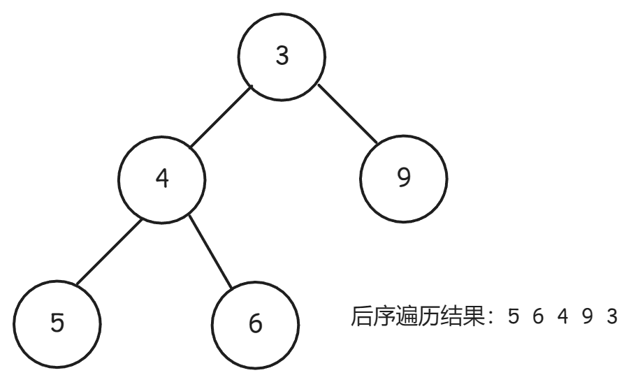
图4.5.1
遍历图4.5.1中的二叉树，使用后序遍历，遍历过程如下： 左：遍历根结点3的左子树，遍历根结点4的左子树，因为结点4的左子树只有1个结点5因此只需要遍历结点5，接着遍历根结点4的右子树，因为结点4的右子树只有1个结点6因此只需要遍历结点6。遍历根结点4。 右：遍历根结点3的右子树，因为结点3的右子树只有1个结点9因此只需要遍历结点9。 根：遍历根结点3。
后序遍历递归实现的代码如下所示：
x//后序遍历递归实现void inOrder(BTNode* T){ //T为NULL说明树为空，递归结束 if(T==NULL){ return; }else{ //后序遍历当前根结点的左子树 preOrder(T->left); //后序遍历当前根结点的右子树 preOrder(T->right); //访问根结点 printf("%d ",T->data); }}
后序遍历递归实现的代码执行过程如图4.5.2所示：
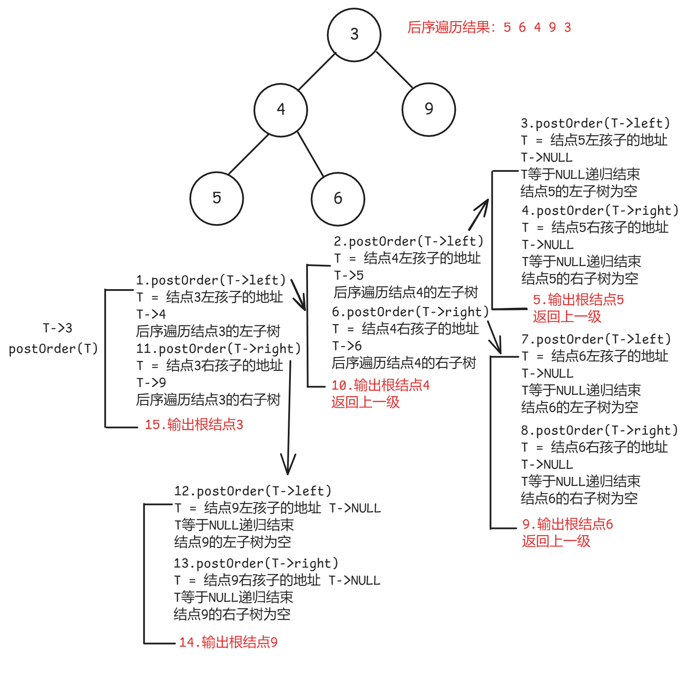
图4.5.2
4.5.2 二叉树的后序遍历非递归实现
二叉树的逆后序遍历序列就是后序遍历序列的倒序。如果1个二叉树的后序遍历序列是：1 3 2 7 9 那么这个二叉树的逆后序遍历序列就是9 7 2 3 1 。如何进行逆后序遍历？二叉树的逆后序遍历是将先序遍历左右子树遍历的顺序进行交换。对于二叉树中的每一个结点，先遍历自己，然后遍历自己的右子树，再遍历自己的左子树。即根右左。
后序遍历非递归实现基本思路为：需要定义两个栈，栈1用来实现逆后序遍历，栈1中出栈元素组成的序列就是逆后序遍历序列，将栈1中出栈的结点存入栈2，当栈1为空时将栈2中的所有结点依次出栈。栈2用来实现后序遍历，栈2中出栈元素组成的序列就是后序遍历序列。
逆后序遍历实现的基本思路为：初始情况下栈1栈2都为空，先将二叉树的根结点入栈1，然后栈1中的结点出栈，将出栈的结点存入栈2。如果出栈结点的左孩子存在则将左孩子入栈1，如果出栈结点的右孩子存在则将右孩子入栈1。必须先将左孩子先入栈右孩子后入栈因为逆后序遍历要先遍历右孩子。然后栈1中的结点出栈，将出栈的结点入栈2。如果出栈结点的左孩子存在则将左孩子入栈1，如果出栈结点的右孩子存在则将右孩子入栈1。重复上述步骤直到栈1为空为止。栈1为空说明二叉树逆后序遍历结束。
栈1为空说明二叉树逆后序遍历结束。此时栈2从栈顶到栈底依次存放的是后序遍历序列。将栈2中所有的结点依次出栈，每出栈1个结点就打印该结点的值，这样就得到了后序遍历的结果。使用后序遍历非递归算法遍历图4.5.3中的二叉树，过程如下： 第1步：初始情况下栈1栈2为空，先将根结点3入栈1，此时栈2为空。 第2步：栈1中结点3出栈，将出栈结点3入栈2，将出栈结点3的左孩子4入栈1，将出栈结点3的右孩子9入栈1。 第3步：栈1中结点9出栈，将出栈结点9入栈2，将出栈结点9的左孩子5入栈1，将出栈结点9的右孩子6入栈1。 第4步：栈1中结点6出栈，将出栈结点6入栈2，出栈结点6是叶子结点没有左右孩子，不需要入栈。 第5步：栈1中结点5出栈，将出栈结点5入栈2，因为结点5是叶子结点没有左右孩子，不需要入栈。 第6步：栈1中结点4出栈，将出栈结点4入栈2，因为结点4是叶子结点没有左右孩子，不需要入栈。 此时栈1为空说明二叉树逆后序遍历结束。 此时栈2从栈顶到栈底保存的是二叉树的后序遍历序列。将栈2中的所有元素依次出栈就得到了后序遍历序列。后序遍历结果：4 5 6 9 3。
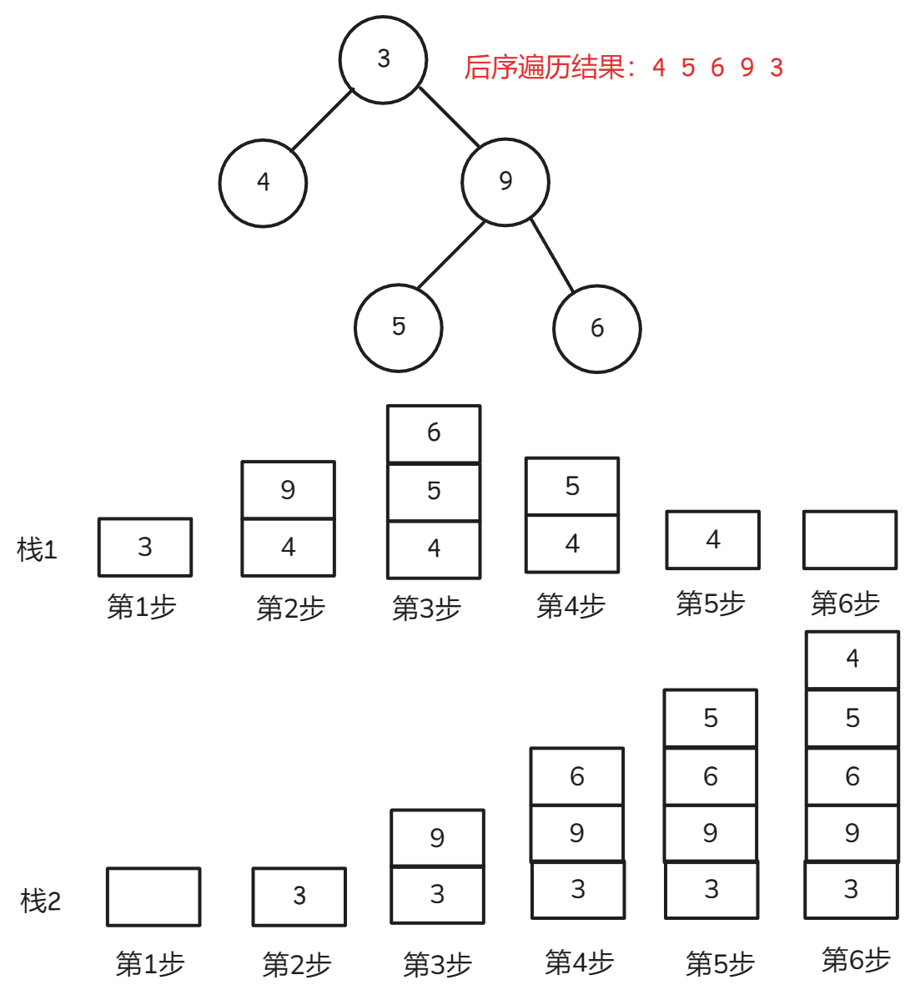
图4.5.3
二叉树的后序遍历非递归实现代码如下：
xxxxxxxxxx//后序遍历非递归实现void postOrder2(BTNode* T){ //如果T为NULL说明树为空，无需遍历 if(T==NULL){ return; }else{ //定义栈1，用来实现逆后序遍历 BTNode* s1[MaxSize]; //定义栈2，用来实现后序遍历 BTNode* s2[MaxSize]; //栈1,栈2初始化 int top1 = -1; int top2 = -1; //根结点入栈1 top1++; s1[top1] = T; //如果栈1为空说明二叉树逆后序遍历结束 //top1等于-1说明栈1为空，top1不等于-1说明栈1不为空，栈1不为空while循环继续（继续逆后序遍历） while(top1!=-1){ //获取栈1中的出栈结点 BTNode* p = s1[top1]; //栈1中的结点出栈 top1--; //出栈结点入栈2 top2++; s2[top2] = p; //如果出栈结点的左孩子存在则左孩子入栈1 if(p->left!=NULL){ top1++; //出栈结点的左孩子的地址入栈1 s1[top1] = p->left; } //如果出栈结点的右孩子存在则右孩子入栈1 if(p->right!=NULL){ top1++; //出栈结点的右孩子的地址入栈1 s1[top1] = p->right; } } //将栈2中的所有结点依次出栈 while(top2!=-1){ //获取栈2中的出栈结点 BTNode* q = s2[top2]; //打印出栈结点的值 printf("%d ",q->data); //栈2中的结点出栈 top2--; } }}4.6 二叉树的层序遍历
层序遍历：按照从上到下从左到右的顺序依次遍历二叉树各结点。如图4.6.1所示，图中二叉树按照层序遍历的结果为：3 4 9 5 6
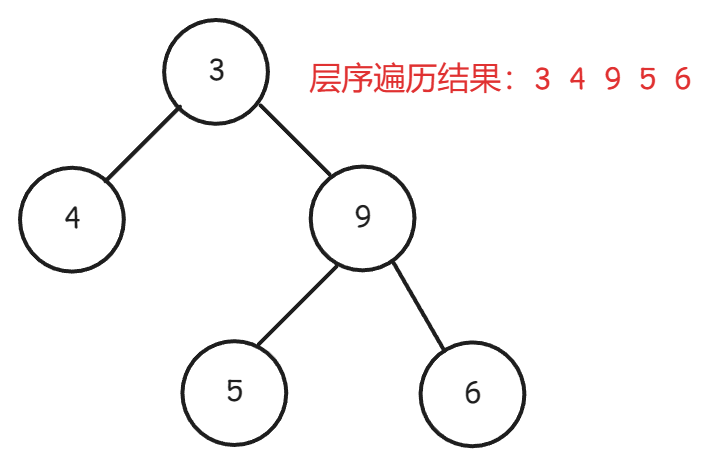
图4.6.1
二叉树的层序遍历的基本思路为：层序遍历需要建立1个队列，初始情况下队列为空，先将二叉树的根结点入队列，然后根结点出队，打印出队结点。如果出队结点的左孩子存在则将左孩子入队，如果出队结点的右孩子存在则将右孩子入队。然后结点出队，打印出队结点。如果出队结点的左孩子存在则将左孩子入队，如果出队结点的右孩子存在则将右孩子入队。重复上述步骤直到队列为空为止。队列为空说明二叉树层序遍历完成。使用层序遍历遍历图4.6.1中的二叉树，层序遍历需要定义1个循环队列，假设循环队列最多可以存储8个结点。 第1步：初始情况下队列为空，队头指针front指向下标0的位置，队尾指针rear指向下标-1的位置。rear++，rear=0，将根结点3插入在rear指向的位置。如图4.6.2所示。
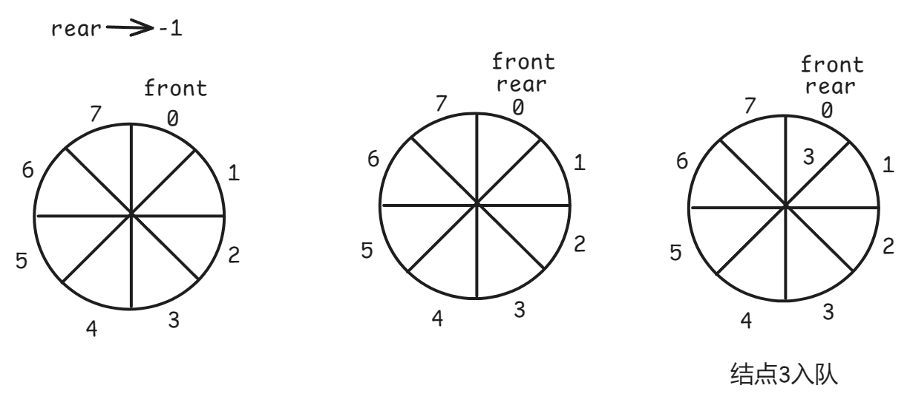
图4.6.2
第2步：结点3出队打印出队结点，front++，front=1，因为出队结点3的左孩子存在，rear++，rear=1，将结点4插入在rear指向的位置，因为出队结点3的右孩子存在，rear++，rear=2，将结点9插入在rear指向的位置。
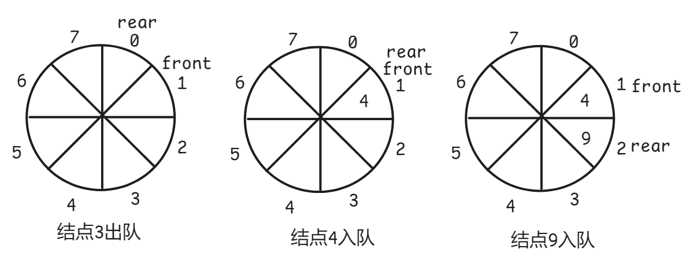
图4.6.3
第3步：结点4出队打印出队结点，front++， front=2，因为结点4是叶子结点 没有左右孩子无需入队。
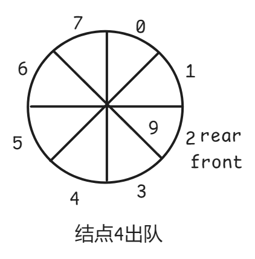
图4.6.4
第4步：结点9出队打印出队结点，front++，front=3，因为出队结点9的左孩子存在，rear++，rear=3，将结点5插入在rear指向的位置，因为出队结点9的右孩子存在，rear++，rear=4，将结点6插入在rear指向的位置。
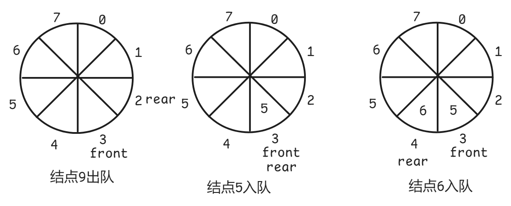
图4.6.5
第5步：结点5出队打印出队结点，front++，front=4，因为结点5是叶子结点没有左右孩子无需入队。
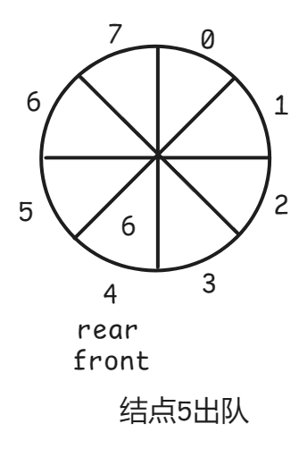
图4.6.6
第6步：结点6出队打印出队结点，front++，front=5，因为结点6是叶子结点没有左右孩子无需入队，此时队列为空说明二叉树层序遍历结束。

图4.6.7
二叉树的层序遍历的代码如下：
xxxxxxxxxx//层序遍历void level(BTNode* T){ //如果T为NULL说明树为空，无需遍历 if(T==NULL){ return; }else{ //定义1个顺序队列，队列中存放的是结点的地址 BTNode* p[MaxSize]; //队列初始化, rear是队尾指针指向队尾结点 ,front是队头指针指向队头结点 int rear = -1; int front = 0; //len记录队列中结点的个数 int len = 0; //根结点入队 rear = (rear+1)%MaxSize; p[rear] = T; len++; //如果队列为空说明二叉树层序遍历完了 //len等于0说明队列为空，len不等于0说明队列不为空，队列不为空while循环继续（继续遍历） while(len!=0){ //获取出队结点(队头结点) BTNode* q = p[front]; //打印出队结点的值 printf("%d ",q->data); //队头结点出队 front = (front+1)%MaxSize; len--; //如果出队结点的左孩子存在则左孩子入队 if(q->left!=NULL){ rear = (rear+1)%MaxSize; //出队结点的左孩子的地址入队 p[rear] = q->left; len++; } //如果出队结点的右孩子存在则右孩子入队 if(q->right!=NULL){ rear = (rear+1)%MaxSize; //出队结点的右孩子的地址入队 p[rear] = q->right; len++; } } }}4.7 线索二叉树
4.7.1 线索二叉树的概念
通过链表实现的二叉树中，如果二叉树中有n个结点，则有n+1个空指针域。如图4.7.1所示，有5个结点总共有6个空指针域。这些空指针域如何利用起来？可以让这些空指针域指向前驱或者后继结点。线索就是指针。指向前驱结点或者后继结点的指针叫做线索。指向前驱的指针left叫做前驱线索，指向后继的指针right叫做后继线索。当left为NULL时，通常将left指针指向当前结点的前驱，当right为NULL时，通常将right指针指向当前结点的后继。在一颗二叉树中对所有的空指针域按照某种遍历方式添加线索叫做线索化。按照遍历方式的不同，线索化分为中序，先序，后序线索化。线索化是在二叉树遍历的过程中完成的。即一边遍历二叉树一边给二叉树的空指针域添加线索。线索化之后的二叉树叫做线索二叉树。按照遍历方式的不同，线索二叉树分为中序，先序，后序线索二叉树。
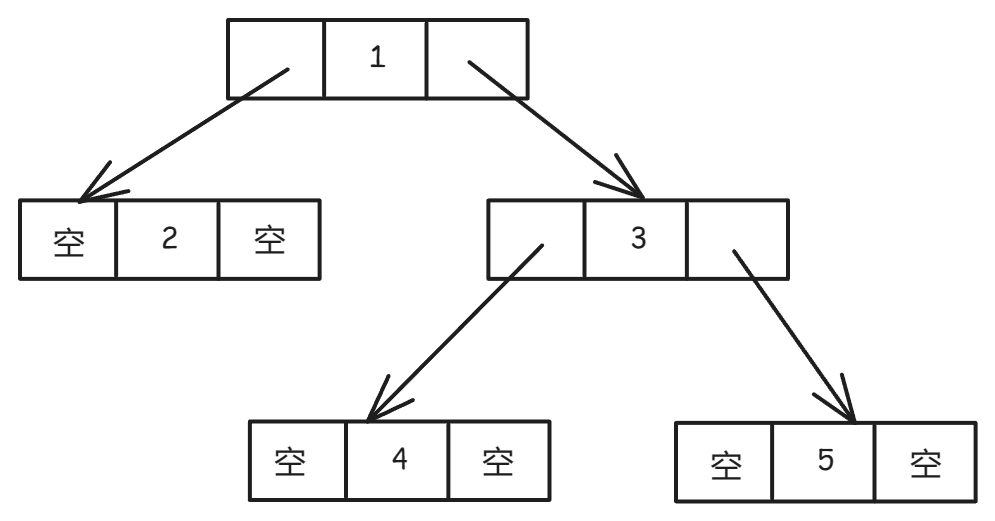
图4.7.1
4.7.2 中序线索化的过程
在线索二叉树中，left指针有可能指向当前结点的左孩子，也有可能指向当前结点的前驱结点。right指针有可能指向当前结点的右孩子，也有可能指向当前结点的后继结点。如何区分这几种情况？可以定义两个标志变量ltag和rtag。当ltag==0时，表示left指向当前结点的左孩子。当ltag==1时，表示left指向当前结点的前驱结点。当rtag==0时，表示right指向当前结点的右孩子。当rtag==1时，表示right指向当前结点的后继结点。 线索二叉树结点的定义代码如下：
xxxxxxxxxx//定义线索二叉树结点typedef struct TBTNode{ //数据域 int data; //前驱线索标志 int ltag; //后继线索标志 int rtag; //左指针 struct BTNode* left; //右指针 struct BTNode* right;}TBTNode;
对图4.7.2中的二叉树进行中序线索化，线索化之后如图4.7.3所示。
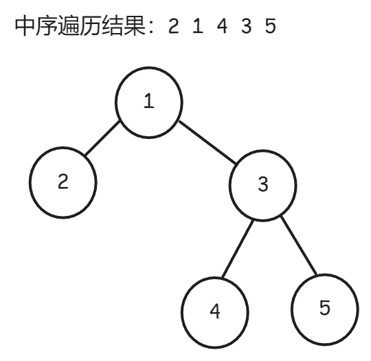
图4.7.2
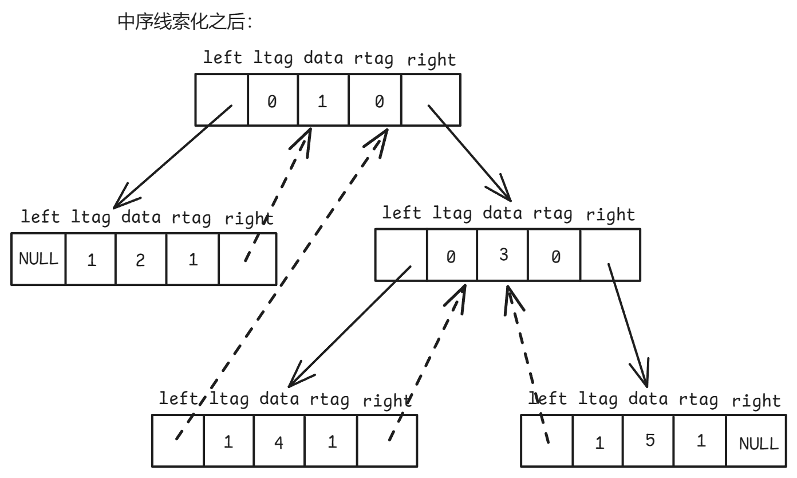
图4.7.3
给图4.7.2中的二叉树每个空指针域按照中序遍历添加线索。 结点2没有前驱，因此结点2的left指针指向NULL，结点2的ltag设置为1表示结点2的left指针是前驱线索。 结点2的后继是结点1，因此结点2的right指针指向结点1，结点2的rtag设置为1表示结点2的right指针是后继线索。
结点4的前驱是结点1，因此结点4的left指针指向结点1，结点4的ltag设置为1表示结点4的left指针是前驱线索。 结点4的后继是结点3，因此结点4的right指针指向结点3，结点4的rtag设置为1表示结点4的right指针是后继线索。
结点5的前驱是结点3，因此结点5的left指针指向结点3，结点5的ltag设置为1表示结点5的left指针是前驱线索。 结点5是中序遍历最后1个结点没有后继，因此结点5的right指针指向NULL，结点5的rtag设置为1表示结点5的right指针是后继线索。
4.7.3 中序线索化的实现
需要先定义1个全局指针变量pre，pre的初始值设置为NULL，p指向当前访问到的结点，pre指向当前访问到的结点的前驱。如何让pre指向当前访问到的结点的前驱？假设p指向当前访问到的结点，在访问下一个结点之前，令pre = p，让pre指向当前访问到的结点。这样访问下一个结点时，pre就是p的前驱。这样每次访问某个结点时，就知道该结点的前驱就是pre。如图4.7.4所示，定义变量p指向当前访问到的结点，定义变量pre指向当前访问到的结点p的前驱，pre的初始值为NULL，按照中序遍历，p指向结点2，结点2的前驱为NULL，在访问下一个结点之前令pre = p，pre指向结点2。
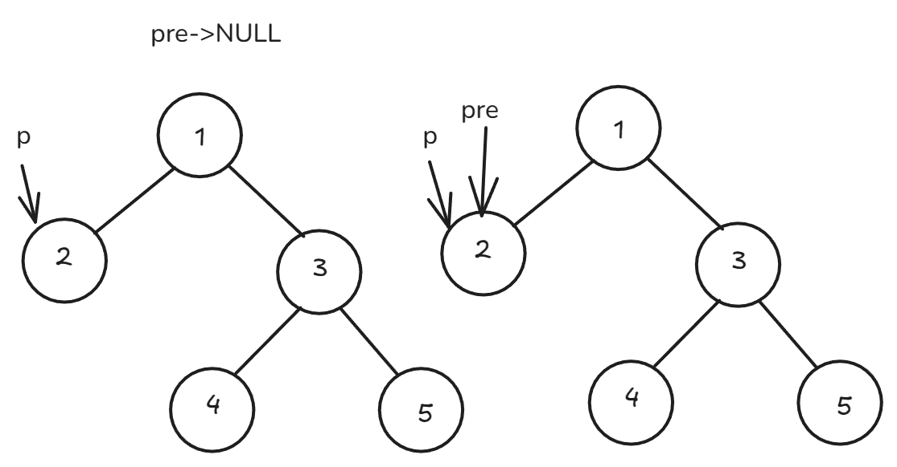
图4.7.4
接着访问第2个结点，按照中序遍历p指向结点1，此时pre指向结点2，pre是p在中序遍历下的前驱。
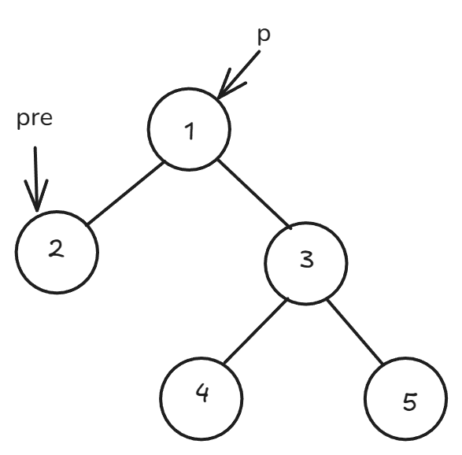
图4.7.5
总结：定义p指向当前访问的结点，每次访问下一个结点之前，令pre = p，这样访问当前结点p时，pre就是p的前驱，p是pre的后继。
假设当前访问到的结点是p，p的前驱是pre。如果p的left指针为NULL则left指针需要修改为线索，需要将p的left指针指向前驱结点pre。结点p的ltag设置为1表示p的left指针指向前驱结点。如图4.7.6所示，假设当前访问到的结点是9，p指向结点9，在中序遍历下结点9的前驱是结点3，pre指向结点3，p的前驱是pre，因为p的left指针为NULL，需要将p的left指针指向前驱结点pre，即p->left = pre，需要将p的ltag设置为1，即p->ltag = 1，表示p的left指针是前驱线索。代码如下：
xxxxxxxxxxif(p->left==NULL){ p->left = pre; p->ltag = 1;};
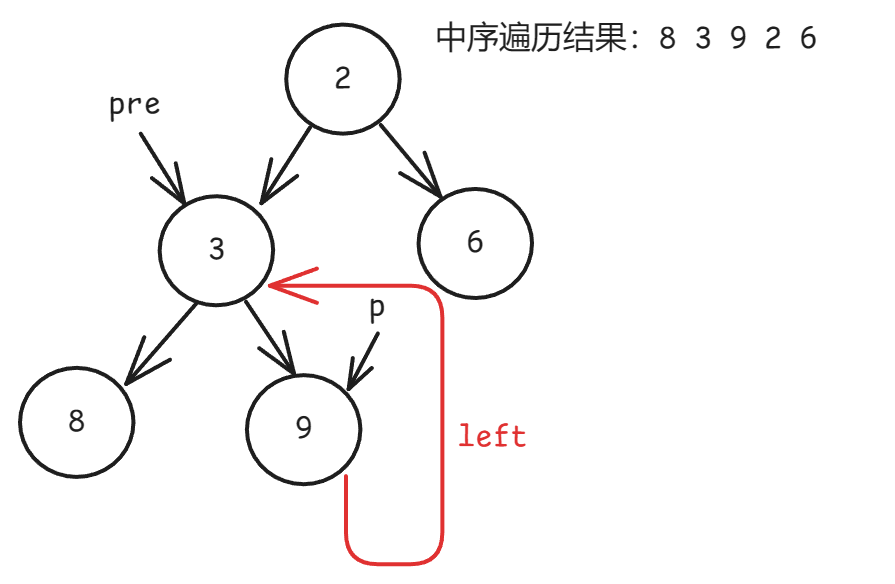
图4.7.6
假设当前访问到的结点是p，p的前驱是pre，则pre的后继是p。如果pre的right指针为NULL则right指针需要修改为线索，需要将pre的right指针指向后继结点p。结点pre的rtag设置为1表示pre的right指针指向后继结点。如图4.7.7所示，假设当前访问到的结点是2，p指向结点2，在中序遍历下结点2的前驱是结点9，pre指向结点9，p的前驱是pre，pre的后继是p，因为pre的right指针为NULL，需要将pre的right指针指向后继结点p，即pre->right = p，需要将pre的rtag设置为1，即pre->rtag = 1，表示pre的right指针是后继线索。代码如下：
xxxxxxxxxxif(pre->right==NULL){ pre->right = p; pre->rtag = 1;};
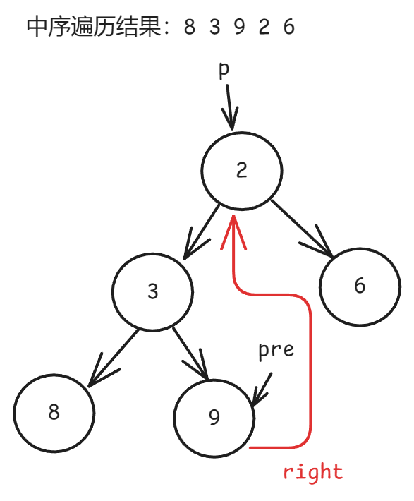
图4.7.7
如图4.7.8所示，假设当前访问到的结点是8，p指向结点8，在中序遍历下结点8的前驱为NULL，p的前驱结点是pre，pre指向NULL，因为pre有可能为NULL，为了避免空指针异常，需要将上面代码修改为：
xxxxxxxxxxif(pre!=NULL&&pre->right==NULL){ pre->right = p; pre->rtag = 1;};
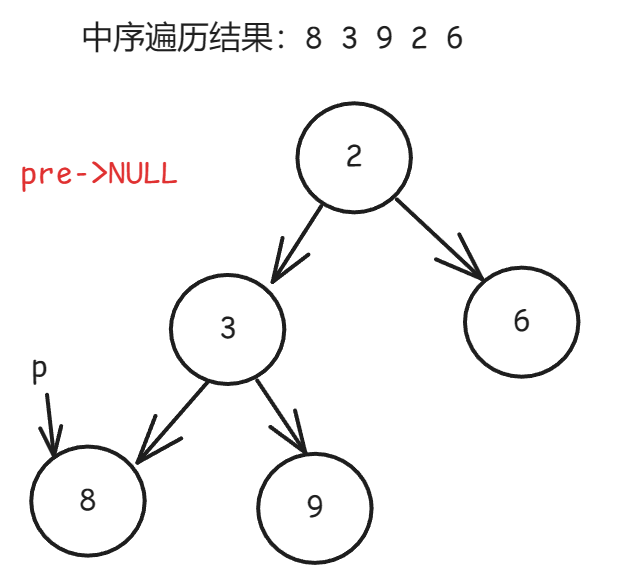
图4.7.8
中序线索化是在二叉树中序遍历的过程中完成的。需要将中序遍历二叉树中访问结点的代码修改为给二叉树的空指针域添加线索的代码。中序线索化代码如下：
xxxxxxxxxx//线索化 //p指向当前结点，pre指向p的前驱结点void clues(TBTNode* p){ //如果p的left指针为NULL，则将p的left指针指向前驱pre //p的ltag设置为1，表示p的left指针是前驱线索 if(p->left==NULL){ p->left = pre; p->ltag = 1; } //为了避免空指针异常，必须加上判断条件pre!=NULL，因为pre有可能为NULL //如果pre的right指针为NULL，则将pre的right指针指向p //pre的rtag设置为1，表示pre的right指针是后继线索 if(pre!=NULL&&pre->right == NULL){ pre->right = p; pre->rtag = 1; } //在访问下一个结点之前，设置pre = p，这样每次访问当前结点p时，pre就是p的前驱 pre = p;}//一边中序遍历一边线索化void inOrder(TBTNode* T){ //T为NULL说明树为空，递归结束 if(T!=NULL){ //中序遍历当前结点的左子树 inOrder(T->left); //线索化 clues(T); //中序遍历当前结点的右子树 inOrder(T->right); } }在中序线索二叉树中，最后1个结点需要特殊处理，如图4.7.9所示，在中序线索二叉树中，最后1个访问到的结点是6，结点6的后继结点为NULL。因为结点6的后继结点为NULL，因此结点6的right指针需要设置为NULL，需要将结点6的rtag设置为1表示结点6的right指针是后继线索。假设p指向最后1个结点6，在访问下一个结点之前设置pre = p。pre指向最后1个结点6。此时二叉树遍历完了。需要设置pre->rtag = 1表示最后1个结点的right指针是后继线索，最后1个结点的right指针为NULL表示最后1个结点没有后继。
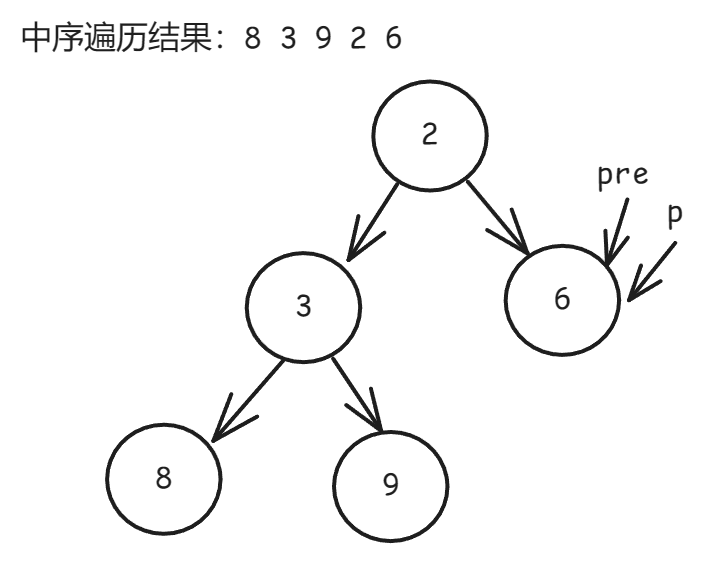
图4.7.9
需要定义1个函数创建中序线索二叉树，在这个函数中调用中序遍历二叉树的代码，在遍历的过程中完成中序线索化。中序遍历结束之后，pre指向最后1个结点，设置pre->rtag=1，表示最后1个结点的right指针是后继线索。最后1个结点的right指向NULL。代码如下所示：
xxxxxxxxxx//创建中序线索二叉树void create(TBTNode* T){ if(T!=NULL){ //中序遍历二叉树 inOrder(T); //最后1个结点的right指针是后继线索，此时pre指向最后1个结点 pre->rtag = 1; }}
4.7.4 中序线索二叉树的遍历
如图4.7.10所示，在中序遍历下，第一个访问到的结点是最左下的结点，如何找到最左下的结点？假设p指向根结点2，因为结点2的左孩子存在，则p移动p指向结点2的左孩子，即p指向结点3。因为结点3的左孩子存在，则p移动p指向结点3的左孩子，即p指向结点8。因为结点8的左孩子不存在，则p停止移动，此时p指向的结点就是最左下的结点。总结：以p为根的二叉树在中序遍历下的第1个结点就是以p为根的二叉树最左下的结点。初始情况下p指向根结点，如果p的左孩子存在则p移动，p指向p的左孩子。重复这个步骤直到p的左孩子不存在为止。此时p指向的结点就是最左下的结点。此时p指向中序遍历下第一个访问到的结点。
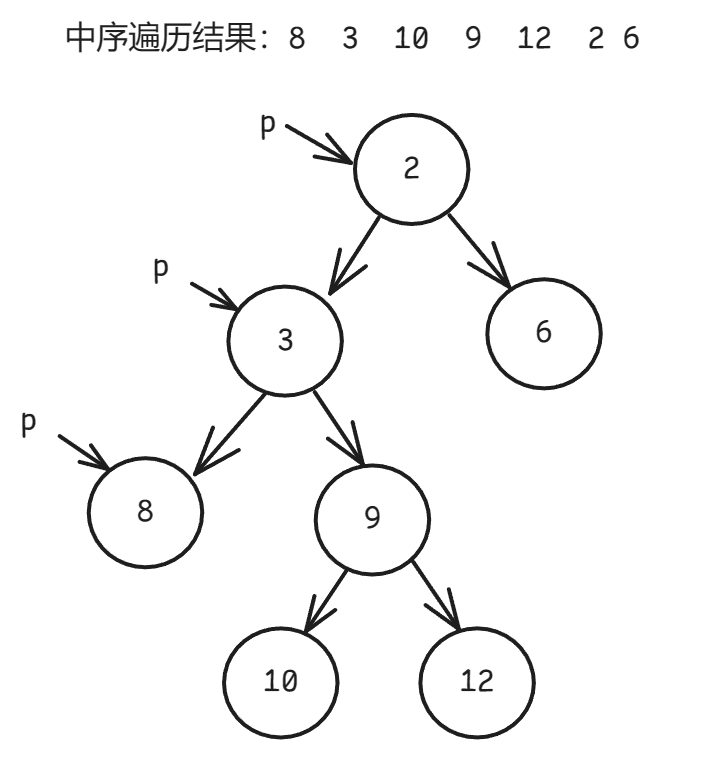
图4.7.10
查找中序线索二叉树中第一个访问到的结点代码如下：
xxxxxxxxxx//查找以p为根的二叉树中最左下的结点，即查找以p为根的二叉树在中序遍历下的第1个结点TBTNode* first(TBTNode *p){ //如果p->ltag==0说明p的left指向p的左孩子，p的左孩子存在，则p移动p指向p的左孩子 while(p->ltag==0){ p = p ->left; } //当p->ltag==1时说明p的左孩子不存在，while循环结束p停止移动，此时p指向的就是最左下的结点，即p指向中序遍历下的第1个结点 return p; } 在中序线索二叉树中，如果当前结点有右孩子如何找到当前结点的后继？如图4.7.11所示，假设p指向结点3，因为结点3的右孩子存在，则结点3的后继是结点3的右子树中最左下的结点。结点3的后继就是以结点3的右孩子为根的子树中第一个访问到的结点。需要调用first函数，给first函数传1个参数p->right，将p的右孩子传给函数first。总结：如果p指向当前访问到的结点，p的右孩子存在，则p的后继是以p的右孩子为根的子树中第一个访问到的结点 。
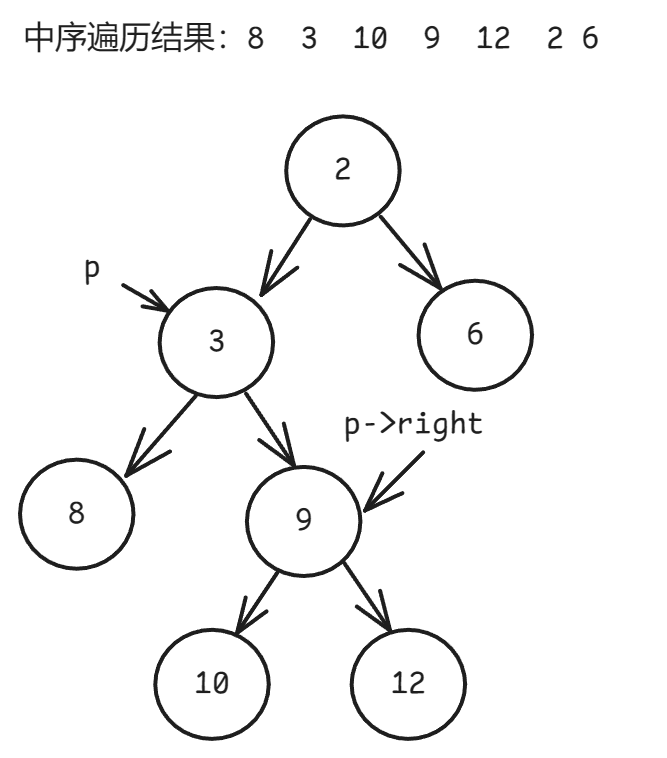
图4.7.11
在中序线索二叉树中，如果当前结点没有右孩子如何找到当前结点的后继？如图4.7.12所示，假设p指向结点10，结点10没有右孩子，通过p的right指针即p->right就可以获取p的后继。p的后继是结点9。当p指向的结点没有右孩子，则p的right指针是后继线索，p的right指针指向p的后继结点。
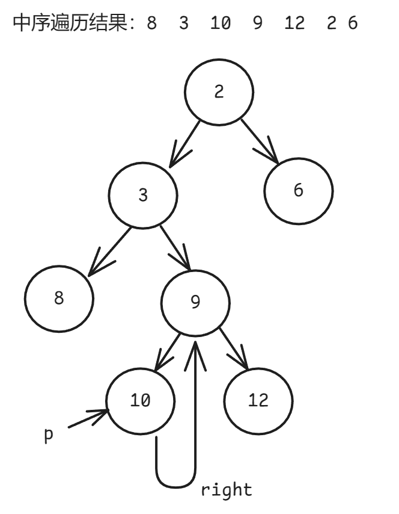
图4.7.12
查找中序线索二叉树当前结点的后继结点的代码如下：
xxxxxxxxxx//查找中序线索二叉树中的后继结点TBTNode* next(TBTNode *p){ //如果p->rtag==1，说明p的right指针是后继线索，right指向后继结点 if(p->rtag==1){ //通过p->right获取p的后继结点 return p->right; //如果p->rtag==0，说明p的右孩子存在right指向右孩子，p的后继是以p的右孩子为根的子树中第一个访问到的结点 }else{ //查找以p的右孩子为根的子树中第一个访问到的结点 TBTNode *q = first(p->right); return q; }} 知道了如何查找中序线索二叉树中第1个结点以及如何查找中序线索二叉树中当前结点的后继，就可以写出中序线索二叉树遍历的代码。先找到第1个结点然后访问第一个结点，然后调用next函数逐个访问后续结点。当发现某个结点的后继为NULL时，说明中序线索二叉树遍历完了。因为在中序线索二叉树中，最后1个结点的后继是NULL。
中序线索二叉树遍历的代码如下：
xxxxxxxxxx//遍历中序线索二叉树void traverse(TBTNode *T){ //获取第一个结点 TBTNode* p = first(T); //遍历二叉树，通过next函数获取下一个结点。逐个打印结点的值。当p为NULL时说明二叉树遍历完了 while(p!=NULL){ printf("%d ",p->data); //获取下一个结点，获取当前结点p的后继 p = next(p); }}